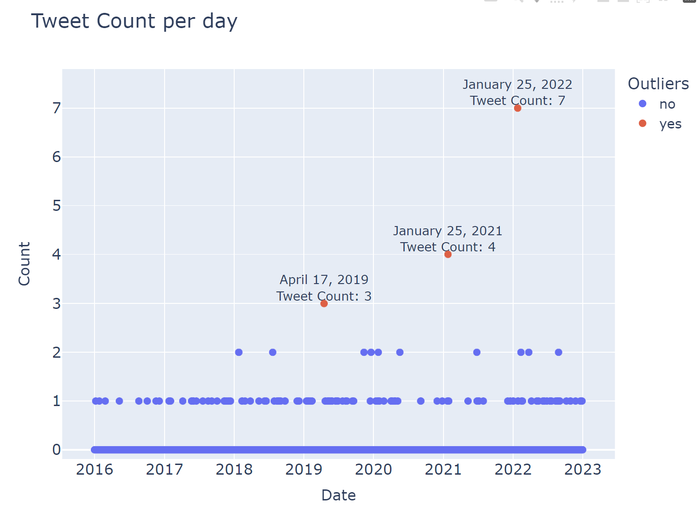

Results
Statistical Modeling
Here are the results of the Chi-squared goodness of fit test for each set of time periods:
| Years |
31.65853658536586 |
1.8969998384832378e-05 |
| Half-years |
48.04878048780488 |
6.419416953502739e-06 |
| Months |
52.73170731707318 |
2.0085118575839827e-07 |
| Half-months |
111.70731707317074 |
1.258689271002706e-13 |
Based on the p-values of the results, we can infer that for all specified time period groupings, there is a significant difference between the expected and the observed distribution
at 95% confidence level with an alpha of 0.05. Going deeper into it to identify the significant time periods, we can perform
residual analysis and pairwise comparisons for each time period grouping.
Years
From the graph of the tweet counts by year, we can see that 2016 has the lowest count while 2022 has the highest count. The residual analysis shows that 2022 tweet count is significantly higher than the expected value for it while 2016 tweet count is actually significantly lower than the expected value for it. The red horizontal lines represent the
±1.96 threshold at 95% confidence level. For the pairwise comparisons, the p-values for 2016 and 2022 are quite low compared to other years. However,
g
iven a Bonferroni-corrected alpha level of
0.002380952380952381 , the tweet count for 2022 is actually only significantly greater than 2016 and 2021's tweet counts. This
doesn't completely confirm the election period hypothesis
, and 2016 having a significantly lower tweet count even goes against the hypothesis.
Half-years
From the tweet count graph, we can see that first half of 2016 is among the half-years with the lowest tweet count while
the first half of 2022 is among those with the highest tweet count . However, the 2022 tweet count is matched by that of the first half of 2019. The residual analysis shows similar results, with the first half of 2022 being on par with the first half of 2019 in terms of significant difference from the expected value. Both halves of 2016 are also seen to have significantly lower tweet counts from the expected values. The pairwise comparisons, with a
Bonferroni-corrected alpha of 0.0005494505494505495 ,
indicate that the tweet count in the
first half of 2022 is only significantly greater than 3 out of the 13 other half-years. The first half of 2016 is also significantly less than two other half-years. This partially goes against the election period hypothesis.
Months
The results for the month time periods are much more striking, as it shows a clear spike in tweet count in January. The residual analysis shows
that only January has a significantly higher tweet count than the expected value . The pairwise comparisons, with a Bonferroni-corrected alpha of
0.0007575757575757576, shows that
the January is significantly greater than 4 out of the 11 other months in terms of tweet count and that there are no other significant pairwise differences. This confirms the incident period hypothesis.
Half-months
The half-month time period analysis results have the most striking results. It shows a large spike in tweet count in the second half of January , which contains the incident period. In the residual analysis, the second half of January has the highest standard residual of over 8 standard deviations above the expected value . In the pairwise comparisons with a Bonferroni-corrected alpha level of
0.00018115942028985507, the second half of January is significantly greater than 15 out of the 23 other half-months in terms of tweet count. That means the second half of January has significantly higher tweet count than over half of the other half-months. This confirms the incident period hypothesis .
Computational Modeling / Machine Learning
The isolation forest model was used to perform anomaly detection . The model uses only the tweet count for each day as input
,
and no other model parameters were tweaked . The outliers or anomalies identified by the model is highlighted in the following graph.

Our model identified the following dates as having anomalous tweet counts: April 17, 2019 with 3 tweets , January 25, 2021 with 4 tweets , and January 25, 2022 with 7 tweets . The January 25 outliers generally support the incident period hypothesis since the incident occured in January 25, 2015
. The highest outlier being in 2022 perhaps also supports the election period hypothesis . However, we were unable to find a real-life event that may have caused the April 17, 2019 outlier. This may be by chance or the result of having a relatively small sample. Regardless, out of the 2,557 days within 2016-2022 , our model was able to identify two incident day outliers
out of the three outliers it detected . With a larger sample size, the anomalies in the incident period and perhaps even the election period may be further exemplified.